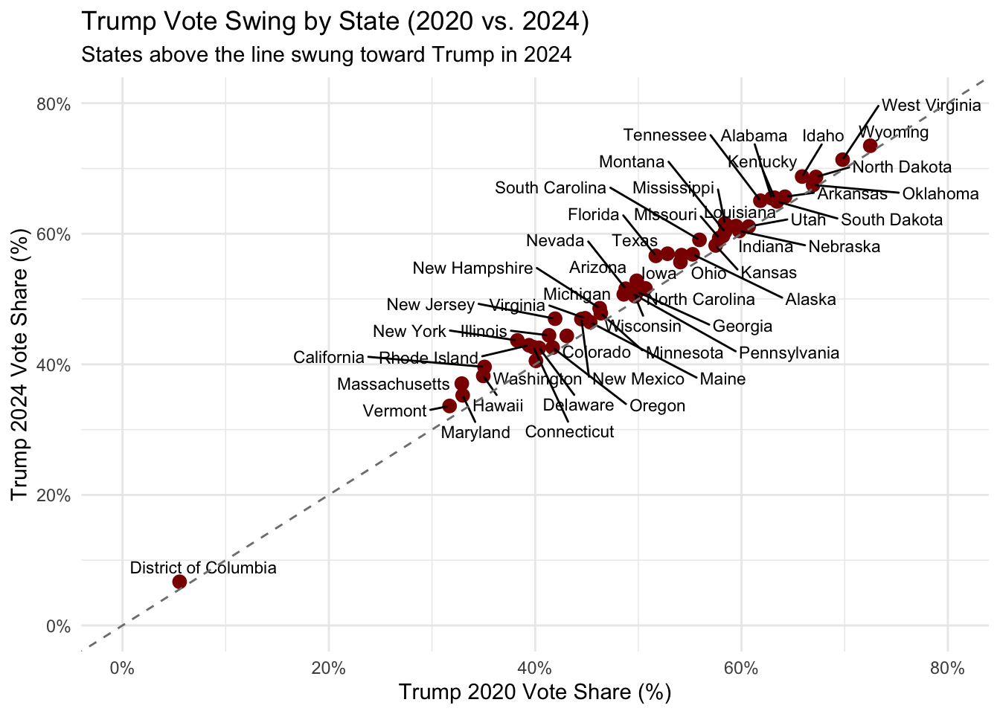

# A tibble: 6 × 8
state abbrev party_year vote_count party year total_votes vote_percent
<chr> <chr> <chr> <dbl> <chr> <int> <dbl> <dbl>
1 Alabama AL obamavote08 813479 Democr… 8 2080025 39.1
2 Alabama AL mccainvote08 1266546 Republ… 8 2080025 60.9
3 Alabama AL obamavote12 795696 Democr… 12 2051621 38.8
4 Alabama AL romneyvote12 1255925 Republ… 12 2051621 61.2
5 Alabama AL clintonvote16 729547 Democr… 16 2047802 35.6
6 Alabama AL trumpvote16 1318255 Republ… 16 2047802 64.4Graphing Relationships
1. Importing & Manipulating Data, Trump Statistics, Creating Tables
The dataset has been pivoted to long format with the year and proportion of votes added as columns.
While Trump’s average vote share declined in 2020 and rebounded in 2024, the consistent level of variation across all three elections reflects ongoing and stable polarization in state-level support.
# A tibble: 3 × 3
year Mean_Percent SD_Percent
<int> <dbl> <dbl>
1 16 52.0 12.8
2 20 50.3 12.3
3 24 52.5 12.12. Scatterplot Creation

The scatterplot visualizes Trump’s state-level vote share (%) in 2020 (x-axis) compared to 2024 (y-axis).The overall pattern shows that many states cluster around the 45° line, suggesting minimal change in vote share. However, a few states deviate significantly– some swing above the line (vote gains), while others fall below (vote losses). For instance, states like Florida and Texas hover near or above the line, while places like Vermont, California, or Washington D.C. remain well below it, showing consistent low support.
The dashed 45° reference line serves as a benchmark of no change: any state on this line gave Trump the same proportion of votes in 2024 as in 2020.
Labeling all 50 states creates overlap and visual clutter, especially in dense regions where many states have similar values.

Altering the graph to only show specific labels surely makes a difference in the plot– I picked DC to represent the district as an outlier, West Virginia since it has one of the highest proportions of Trump voters for both years, and states like Georgia, Arizona, Pennsylvania, and Florida since they’re notable swing states.
The District of Columbia stands out from the rest of the data– all other states have Republican voting proportions between 20 and 80 percent, whereas DC stands alone with around 5 percent… interesting, because DC is the heart of the nation!

Removing DC from the graph makes it a little easier to identify other states in the graph and how much they varied from the 45 degree line.
3. Line Graphs


Across the 50 states, Republican vote share shows considerable variation, but some broad patterns emerge:
Many states show stability or slight increases in Republican support, especially after 2016.
The middle band of states—those with vote shares between 45% and 60%—tend to move incrementally rather than sharply.
A handful of states show distinct trends, such as steady gains or losses, or sharp fluctuations (e.g., Utah in 2016).
This suggests that while some state-level realignments are occurring, much of the country remains relatively politically consistent, reinforcing long-standing partisan divides.
Utah stands out as a clear outlier, with a dip in 2016 followed by a rebound. This makes it one of the most visually dynamic lines in the plot. Texas and Florida show gradual increases in Republican support over time. Georgia, Arizona, and Wisconsin hover near the 50% line, reflecting their battleground status and shifting partisan balance. California continues to show very low Republican vote share, reinforcing its position as a Democratic stronghold.
Color is used intentionally to emphasize a diverse set of states that each represent a distinct electoral narrative:
Utah (red): Highlights a unique trajectory with sharp swings and recovery, reflecting ideological nuances within the Republican base.
Florida & Texas (blue & green): Represent growing Republican strength in large, diverse states.
Georgia, Arizona, Wisconsin (purple, orange, brown): All are swing states that have shifted party allegiance in recent elections, making them crucial to understanding national electoral dynamics.
California (pink): Serves as a contrast case—one of the least supportive states for Republican candidates, moving even lower over time.
This combination of states allows the plot to tell a story of divergence. The use of muted gray for all other states ensures that the focus remains on these key trajectories.

Each region has a unique color, improving clarity within the facets. Facets separate regions, so overlapping lines are more readable. Now, one can easily compare regional trends and intra-regional consistency.
4. Thematic Map

The map shows how Trump’s support changed from 2020 to 2024 across different states. States in red are where he gained more support in 2024 compared to 2020. You can easily see that he did better in many Southern states, like Florida, Georgia, and Texas, and also in some parts of the West and Northeast, like California and New York.
Compared to the earlier scatterplot, this map makes it much easier to spot patterns across regions. Instead of just numbers, it shows you where things changed on the map. You can quickly tell which parts of the country are becoming more supportive of Trump, and which areas stayed the same.